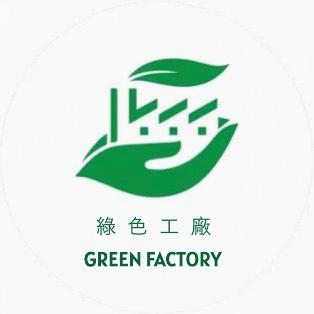
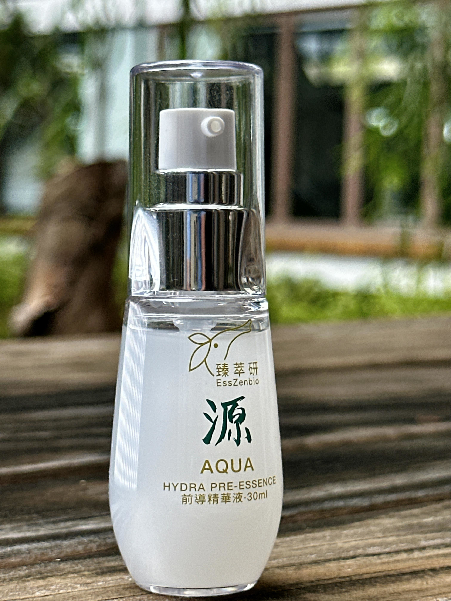
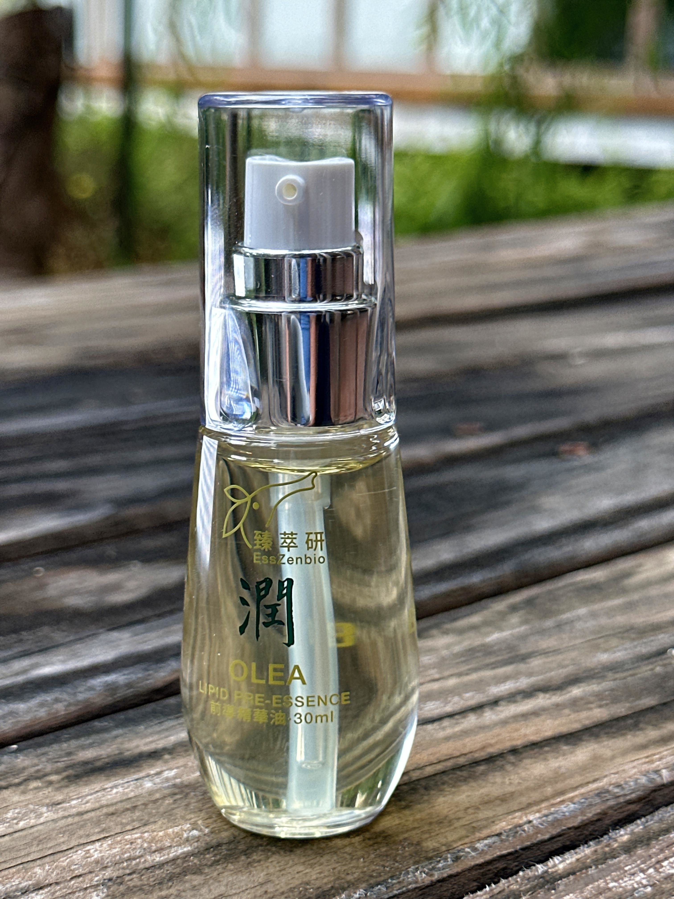
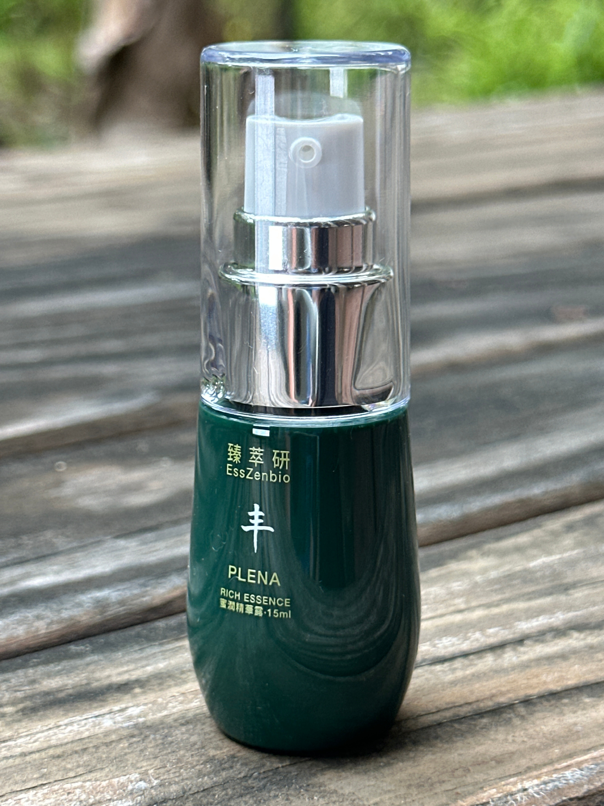
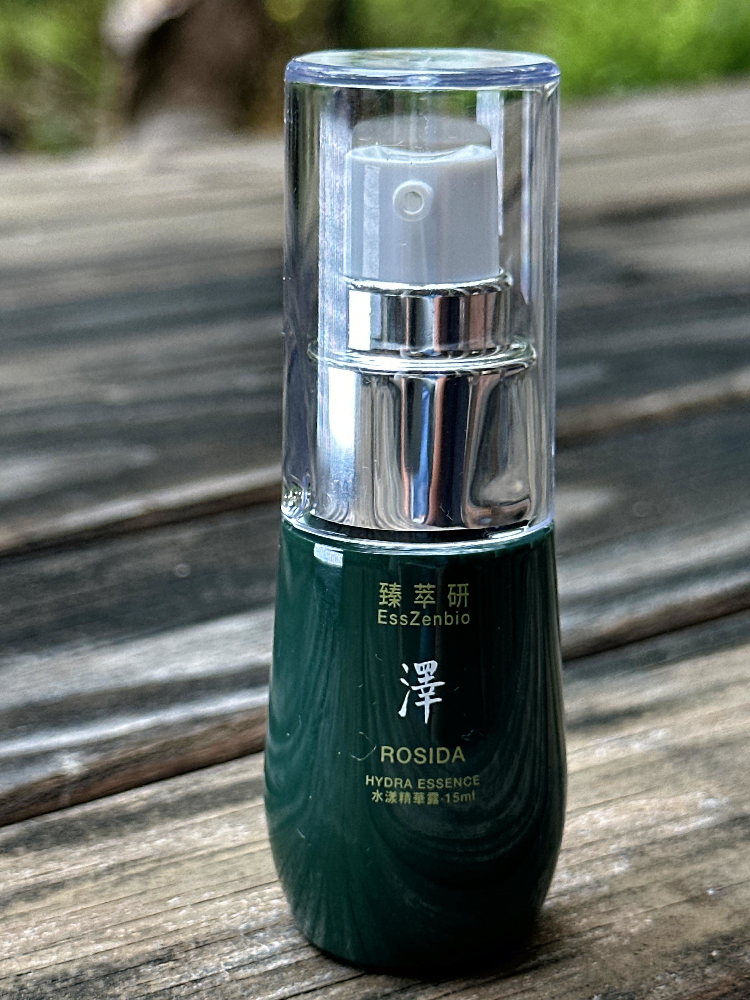
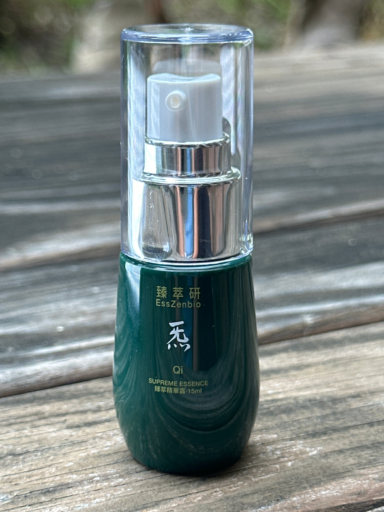
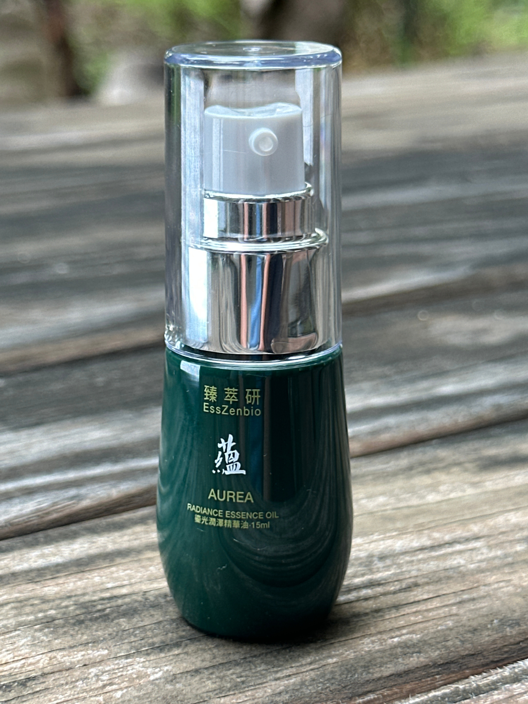

Scientific Innovation
臻萃研 EssZenbio
研發轉化與配方實務
科研實力：國家級合作與製程創新
萃取技術 / 配方研發
匯聚頂尖研發團隊，主導深度戰略合作，確保技術領先與數據嚴謹。
全流程嚴控
從選料、檢驗、萃取到分析，我們建立了一套嚴謹的科學標準。
生產過程保證無汙染、無化學殘留，只保留植物最純粹的活性與效能。
基於科學可驗證數據，開發出涵蓋全方位產品線，實踐整體健康哲學。
AI 驅動的動態健康管理，針對皮膚及多項生理指標開發出專屬的 AI 檢測演算模型。
出品商
臻萃研不僅提供產品，更提供解決方案。我們自主組建了專業的 AI 研發團隊。
生產工廠
綠色標章工廠生產，確保製程符合嚴格之品質管理規範。


分子級精密轉化
人參水解提取物技術
克服原始皂苷分子量大、難以吸收的局限。我們透過定向酵素水解技術，將大分子皂苷轉化為分子量僅 622 Da 的 Compound K(CK)。
CK 皂苷抵達肌底的四大科學實證功效
-
1. 緊緻撫紋（膠原蛋白雙效管理）
促進生成 活化纖維母細胞 ➔ 提升 第一型膠原蛋白 (Type I Collagen) 合成。實際功效 從源頭守護膠原蛋白，顯著減少皺紋深度，恢復肌膚回彈力。
-
2. 淨白淡斑
抑制源頭 降低 酪氨酸酶 (Tyrosinase) 活性 ➔ 減少黑色素合成。實際功效 預防光照斑點生成，淡化既有暗沉，達到均勻透亮的淨白效果。
-
3. 內源性保濕
基因上調 刺激表皮細胞提升 玻尿酸合成酶 (HAS2) 表現。自體生成 促使肌膚自行製造玻尿酸 ➔ 由內而外增加真皮層含水量。實際功效 突破表面補水限制，強化表皮防禦屏障。
-
4. 光防護與抗氧化（抵禦環境傷害）
清除傷害 高效中和紫外線引起的 活性氧自由基 (ROS)。實際功效 降低細胞氧化壓力，防止 DNA 受損，打造「抗光老防護罩」。
(註：1.28 mg/g 屬於具備優異臨床有效性之黃金濃度)
蜂王漿蛋白溫和化路徑
水解酵素 能精準切斷蛋白質表面的致敏醣基。使保養品達到極高的溫和度，連敏感肌膚也能安全使用。
王漿酸 (10-HDA) 的核心功效
王漿酸是蜂王漿獨有的活性脂肪酸，其高脂溶性使其極易被皮膚吸收。
- 刺激膠原新生與抗老 促進人體皮膚纖維母細胞分泌轉化生長因子 (TGF-β1)，強烈刺激 第一型膠原蛋白 合成，同時抑制基質金屬蛋白酶 (MMPs) 活性，增加肌膚厚度、減少細紋。
- 強化肌膚屏障與保濕 上調表皮細胞中 絲聚蛋白 (Filaggrin) 的基因表現，顯著提升肌膚的自體鎖水能力。
- 廣譜抑菌與抗發炎 具備天然抗菌特性，特別針對引發痘痘的 痤瘡丙酸桿菌 有顯著抑制作用，舒緩紅腫發炎與痘痘肌。
短鏈胜肽群（細胞信使與營養補給）
- 強效抗氧化與抗光老 富含提供電子的胺基酸，能快速中和因紫外線或污染產生的 活性氧自由基 (ROS)，保護細胞 DNA 免受氧化損傷。
- 促進細胞增殖與組織修復 活化角質形成細胞與真皮纖維母細胞增殖，加速受損肌膚修復週期，改善膚質粗糙。
- 抑制黑色素沉澱 透過競爭性結合，有效抑制 酪氨酸酶 (Tyrosinase) 活性，從源頭干擾黑色素生成，達到均勻膚色與淨白。
活性成分滲透與靶點解析
沙棘果的
特性與應用
Omega-7 Treasure
三大核心配方實體功效
高含量的類黃酮與維生素C能發揮強大的協同抗氧化作用，中和引起肌膚老化的自由基，減少紫外線或環境壓力造成的氧化損傷，進而改善暗沉、提亮整體膚色。
蘊含植物界罕見的 Omega-7 (棕櫚油酸)。其結構與人體皮脂極為相似，具備極佳親膚與滲透力。直接提供表皮所需脂質，加速修護受損屏障，增強保水與防禦力，特別適合舒緩乾燥與敏弱。
萃取物中的維生素C是促進肌膚膠原蛋白生成的關鍵輔酶。結合類黃酮的保護機制，能有效減緩膠原蛋白流失速度，提升彈性與緊緻度，從根本發揮抗老與撫平細紋的科學體感。
配方系統應用與行銷策略建議
由於沙棘果同時具備親水性（維生素C、類黃酮）與親脂性（Omega-7）的珍貴成分，這種多樣性的活性精華非常契合必須同步使用的 AQUA 與 OLEA 雙導系統。透過水相與油相系統的同步導入，能最大化這些活性成分的生物利用率。
活性隔離包裝技術
解除成分「化學監禁」
傳統預混產品為了維持穩定，必須添加高濃度界面劑與穩定劑。這不僅稀釋了活性濃度，更讓分子在接觸肌膚前已因長期化學交互作用而產生降解與失活。
[源]、[潤] 與活性成分完全隔離，確保核心活性在使用的瞬間維持最高新鮮動能。
活性瓶體特別添加抗 UV 成分，物理屏蔽紫外線與可見光導致的光解反應，鎖住每一滴實質研發數據產生的效能。
物理屏障技術：確保活性指標穩定至使用前30秒
掌心瞬時物理乳化
從實務到學理的
革命性滲透對比
傳統滲透率之限制
傳統產品為維持油水穩定，必須依賴大量界面劑形成穩定的「膠束團簇」。這些化學團簇體積巨大，會將活性成分「囚禁」其中，導致成分難以突破 500 Da 屏障，滲透效率低下。
EssZenbio 物理動能飛躍
利用掌溫 (34-36°C) 與揉搓產生的物理能實現瞬時乳化。引導微分子迅速穿過角質層間隙直送肌底。
* 數據說明：物理能量激活微分子動力，打破界面劑團簇障礙。
實踐：掌心乳化儀式示範
感受物理能量的
瞬間轉化
透過這段短片，您可以清楚看到如何利用掌溫與摩擦力，將水相與油相精華瞬間乳化，釋放微分子成分，為肌膚帶來極致的滲透體驗。
* 點擊影片或右下角按鈕即可開啟音效
安全性與實質活性的雙重飛躍
極致安全性
3.5 kDa 安全臨界點篩選與物理乳化技術，將化學少數導致過敏的可能性降至最低，守護脆弱屏障。
實質高效能
隔離鎖住巔峰能量，物理載體加速深層滲透，讓優質活性精華直接發揮應有的科學價值。
生理適配性
依據環境參數調整油水配比，根據 AI 智能檢測膚況，形成動態配方提供即時護膚實務。
從學理到配方實務：動態產品矩陣
保養不應是繁瑣的疊加，而是根據環境與膚況的「精準調配」。我們利用不可逆的物理屏障原理，將核心基底與功效精華分離。透過掌心的「即時油水乳化美學」，讓成分精準傳遞。
Phase 1 核心基底雙引領 (即時乳化載體)

[源] AQUA
仿生啟動技術- 仿生皮膚邏輯：利用微分子玻尿酸模擬天然保濕因子 (NMF)，降低防禦性張力。
- AQUALANCE™ 滲透壓調節：平衡離子濃度，促使乾燥細胞主動吸水。
- 啟動任務：接觸第60秒即軟化僵硬角質，開啟精準快遞窗口。

[潤] OLEA
仿生重塑技術- 脂質仿生邏輯：以極接近人類皮脂的原生橄欖油為載體，結合神經醯胺。
- 物理性防護牆：與[源]結合乳化，鑽入角質受損處填補空隙。
- 屏障鎖定：建立穩定環境，防止後續加入的功效精華流失或因溫差降解。
Phase 2 四項活性精華特調 (精準滴入)

[丰] PLENA 蜜潤精華露
[源] + [潤] + [丰]
[丰] PLENA 穿透脂質屏障，刺激膠原蛋白合成。結合沙棘果萃取發揮強大抗氧化作用，加速修護受損屏障。
溫和親膚，深層沁涼修護，安撫乾燥躁動，舒緩敏感或發炎紅腫不適。
改善暗沉、提亮整體膚色，提升肌膚彈性與緊緻度，達成抗老與撫平細紋。

[澤] ROSIDA 水漾精華露
[源] + [潤] + [澤]
[澤] ROSIDA 傳明酸阻擋黑色素合成。配合胜肽提供肌膚重建氨基酸基礎，達到水油平衡與同步修護。
質地清爽、吸收快速且無負擔，進行高效淨白保養，維持穩定舒適水潤感。
精準防禦暗沈點，賦予肌膚「水漾」的澄淨透明度，呈現純淨發光感。

[炁] Qi 臻萃精華露
[源] + [潤] + [炁]
促使自體生成玻尿酸，並降低酪氨酸酶活性。五胜肽強化真皮與表皮連接處，促進膠原蛋白合成。
由內而外增加真皮層含水量，喚醒肌膚鮮活氣息，帶來深層豐潤與重拾平滑觸感。
顯著減少皺紋深度、緊緻面部輪廓、淡化斑點暗沉，打造抗光老的防護特性。

[蘊] AUREA 鎏光潤澤精華油
[源] + [潤] + [蘊]
複合脂質深度模擬天然皮脂膜結構，由神經醯胺抓取水分，植物固醇穩定雙層膜，大幅減少水分流失。
為極乾燥肌提供最深層脂質補給，安撫強風低溫導致的粗糙，形成隱形保護膜。
深度修護乾裂紋理，賦予極乾與熟齡肌膚如琥珀般的自然光輝與絲緞光澤感。